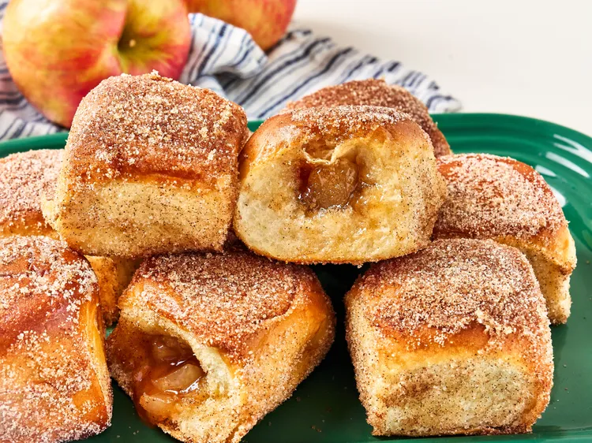

Apple cidar Hawaiian Roll Donuts

Apple Cidar Donuts
Try these apple cider stuffed Hawaiian rolls that are reminiscent of apple donuts.
Prep Time: 15mins Cook Time: 15mins
Servings: 12
Ingridients
- 1 (12-count) package Hawaiian rolls
- 1 cup apple pie filling
- 2 (0.74 ounce) pouches apple cider powdered drink mix (such as Alpine Spiced Apple Cider®)
- 5 tablespoons butter, divided
- 1/2 cup sugar
- 1 teaspoon cinnamon
Steps
- Preheat the oven to 350 degrees F (175 degrees C).
-
Separate Hawaiian rolls and cut a 1/2-inch slit in the side of
each one. Use a finger or the end of a spoon to create a larger
opening and a space large enough to fill each roll with
about 1 tablespoon filling.
-
Separate Hawaiian rolls and cut a 1/2-inch slit in the side of each one.
Use a finger or the end of a spoon to create a larger opening and a space
large enough to fill each roll with about 1 tablespoon filling.
-
Melt 4 tablespoons butter and brush each roll on all sides with melted butter.
Place rolls on a lined baking sheet.
- Bake rolls in the preheated oven until lightly toasted and golden brown, 12 to 14 minutes.
-
Meanwhile, stir together remaining apple cider packet, sugar, and cinnamon in
a shallow dish and melt remaining butter.
- Brush tops of rolls evenly with melted butter and coat each roll in sugar mixture
Home